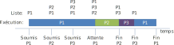

Processus et virtualisation
Guillaume Chanel
Cours système d'exploitation by Guillaume Chanel, Jean-Luc Falcone and University of Geneva is licensed under CC BY-NC-SA 4.0


Brain-storming
Pour vous qu’est-ce qu’un processus?
Quelles informations contient-il?
Où réside ces informations en mémoire?
Que permet les systèmes multi-processus ?
Le processus en bref
Un processus représente l’exécution courante d’un programme. Il contient donc toutes les informations nécessaire à l’exécution du programme.
Mémoire virtuelle
Espace d’adressage du processus (mémoire virtuelle)
Exercice
Créer un programme en C qui:
- déclare des variables globales
- déclare des variables locales (e.g. dans une fonction)
- utilise la fonction malloc pour allouer de la mémoire
- appelle une fonction autre que la fonction main
- affiche TOUTES les adresses des objects déclarés ci-dessus (y compris les fonctions et les adresses des pointeurs)
- attend une entrée utilisateur ou se met en pause
Correction
#include <stdio.h>
#include <stdint.h>
#include <unistd.h>
#include <stdlib.h>
#include <string.h>
#include <errno.h>
#define MALLOC_SIZE 0x10 //en octets
#define STACK_ALLOC_SIZE 256*1024 //en octets
uint32_t nonInitData; //Variable globale non initialisée
uint32_t initData = 0x12; //Variable globale initialisée
char* ptChar = "Where is this pointed string?"; // ???
char tabChar[] = "Where is this char array?"; // ???
void useStack()
{
//Augmentation de la pile
char tab[STACK_ALLOC_SIZE];
//Pause pour examiner le processus
printf("Stack size has been increase and the program paused...\n");
fgetc(stdin);
}
int main()
{
//Décalaration de variables locales
uint32_t localVar1, i;
char *pt_malloc; //pointeur sur la zone allouée
// Just print my pid
printf("My PID = %d\n\n", getpid());
//Récuperer l'adresse du brk avant et après allocation de mémoire
pt_malloc = malloc(MALLOC_SIZE);
//Affichage de l'adresse de la fonction main dans le segment de code
printf("\n--- code segment ---\n");
printf("main function address: %p\n", main);
printf("use stack function address: %p\n", useStack);
printf("Fixed string adress(ptChar): %p\n", ptChar); //La chaine est constante donc dans .bss
//Affichage des differente variable presentes dans le segment de donnée (dabord initialisées puis non initialisées)
printf("\n--- data segment ---\n");
printf("initData address: %p\n", &initData);
printf("Pointer to fixed string address (ptChar adress): %p\n", &ptChar); //Ce pointeur est alloué en donnée globale initialisée
printf("Character array address (tabChar): %p\n", tabChar); //Le tableau est une variables (avec equivalence de pointeur) -> données initialisées
printf("--\n");
printf("nonInitData address: %p\n", &nonInitData);
//Affichage des donnée du tas (brk avant et apres allocation de mémoire et pointeur sur donnée allouées)
printf("\n--- Heap ---\n");
printf("Address allocated variable: %p\n", pt_malloc);
printf("\n--- Mémoire partagée ---\n");
printf("printf function adress: %p\n", printf);
printf("errno address: %p\n", &errno);
//Affichage des données locales affichées dans la piles
printf("\n--- Stack ---\n");
printf("First Local variable address: %p\n", &localVar1);
printf("Second Local variable address: %p\n", &i);
printf("pt_malloc variable address: %p\n", &pt_malloc);
printf("-------------\n");
//Pause pour examiner le processus
fgetc(stdin);
//utilisation de la pile et pause
useStack();
//try to modify the pointed string
ptChar[0] = 'e';
return EXIT_SUCCESS;
}
Exercice
En utilisant la commande pmap:
- observer les différents segments du processus
- comparer les adresses des segments avec les adresses des variables de votre programme
- confirmer la bonne répartition des données dans les segments
Objectif de la mémoire virtuelle
Grâce la mémoire virtuelle on va pouvoir:
- définir un espace d’adressage indépendant pour chaque processus;
- adresser plus de mémoire que la mémoire physique disponible;
- partager facilement des zones de mémoire entre processus;
- adresser le contenu de fichiers comme s’il étaient en mémoire.
Virtualisation de la mémoire
L’espace d’adressage est divisé en pages (en général de 4Ko). Une page virtuelle peut être associée à une page de mémoire vive (page valide) ou morte (page invalide).
Conversion adr. virtuelle -> adr. physique
Elle est réalisée par le matériel (Memory Management Unit - MMU):
Table des pages
Une table des pages existe pour chaque processus.
Chaque table est maintenue par le système (i.e. Linux, MacOSX, Windows, etc…) et utilisée par le MMU.
Quelques informations généralement contenues dans une entrée de la table:
- numéro de page physique;
- taille d’une page;
- permissions d’accès;
- bit «page valide» ou «page présente en RAM»;
- bit «page sale» (i.e. modifiée depuis sa dernière présence sur disque);
- …
Défaut de page
Un défaut de page arrive lorsque le MMU ne peut pas satisfaire une demande de page car elle n’est pas référencée dans la table du processus (bit «page valide» = false).
Il y a alors 3 cas possibles:
- l’accès mémoire est illégal -> le noyaux termine le processus en «segmentation fault» (SIGSEG);
- La page est présente en mémoire physique , c’est un défaut de page mineur -> il suffit de mettre à jour la table du processus pour la faire pointée sur la page en mémoire physique;
- La page n’est pas présente en mémoire physique, c’est un défaut de page majeur .
Défaut de page majeur
Pour un défaut de page majeur il faut charger la page manquante:
- on sauvegarde l’état du processus et on le mets «en attente»;
- si il n’y a pas de place en mémoire physique on libère une page peu utilisée;
- on charge la page manquante en mémoire depuis le disque;
- on mets à jour la table des pages du processus;
- on charge l’état du processus et on repart de l’instruction ayant provoquée la faute de page (cette fois satisfaite).
A noter que lorsqu’une page est libérée en mémoire physique soit:
- elle existe déjà sur le disque car elle n’a pas été modifié (i.e. bit «page sale» = 0), dans ce cas il suffit de remplacer cette page physique par la nouvelle
- elle à été modifiée et est mise en swap pour conserver les modifications.
Verrouillage de la mémoire
Il est possible de demander au noyaux de verrouiller des pages virtuelles en mémoire physique. Cela:
- évite les défauts de page majeur pour ce processus -> rapidité d’accès;
- pas de swap, donc moins de persistance de l’information -> sécurité.
#include <sys/mman.h>
int mlock(const void *addr, size_t len);
int munlock(const void *addr, size_t len);
/* Verrouille / déverrouille les pages incluant les adresses allant de addr à (addr + len) */
int mlockall(int flags);
int munlockall(void);
/* Verrouille / déverrouille TOUTES les pages virtuelles du processus
flags = MCL_CURRENT -> seulement les pages actuellement en mémoire virtuelle
flags = MCL_FUTURE -> aussi les pages futures */Exercice
En utilisant la commande pmap -X sur le processus précédent, observer et expliquer les champs Size, RSS, PSS et Swap
Comment ces champs evoluent-t-ils lorsque plusieurs processus identiques sont lancés ?
Que faudrait-il faire pour que la champ Swap commence à augmenter ?
Pourquoi dans certain cas Size est différent de RSS mais Swap vaut 0 ?
Processus
Structure d'un processus
Un processus est identifié grâce à son PID (Process ID). Il est unique pour chaque processus mais un PID libéré peut être réutilisé.
Chaque processus est décrit par son contexte:
- l’état du processeur qui l’exécute:
- les registres accessibles au programme;
- l’instruction courante (compteur ordinal);
- les informations de pagination (tables des pages...);
- son espace mémoire virtuel -> les données et le programme;
- les ressources dont il dispose;
- des informations administratives:
- PID, utilisateur(s), Session ID, Groupe ID;
- priorités (statique et dynamique);
- consommation de ressources.
Structure d'un processus
Dans le noyaux Linux (3.7.10) un processus est définit par la structure task_struct (/usr/src/linux/include/linux/sched.h).
struct task_struct {
/* ... */
/* PID du processus */
pid_t pid;
/* Description de la mémoire virtuelle + table de page */
struct mm_struct *mm;
/* Etat du CPU / registres (specifique à la platforme) */
struct thread_struct thread;
/* Information sur l'ordonnancement du processus */
struct sched_info sched_info;
/* Contient notament la table des descripteur de fichier ainsi
qu'une liste des descripteur "close on-exec" */
struct files_struct *files;
/* ... (+ de 350 lignes au total) */
};
/* Dans /usr/src/linux/include/linux/mm_types.h */
struct mm_struct {
/* ... */
unsigned long start_code, end_code, start_data, end_data; /* segments de code / données */
unsigned long start_brk, brk, start_stack; /* segment du tas et de la pile */
/* ... */
}Création de processus
Lors du démarrage du système, le processus init est créé par le noyau. Il est donc le premier processus et porte le PID 1.
Tous les autres processus sont créés par un appel à la fonction fork. Chaque
processus a donc un parent (excepté init, c.f. commande pstree).
#include <unistd.h>
#include <sys/types.h>
pid_t fork(void); // Crée un nouveau processus enfant
pid_t getpid(void); // retourne le PID du processus
pid_t getppid(void); // retourne le PID du parentCette fonction crée un nouveau processus qui est une réplique du processus parent (e.g. copie de la table des pages, état du processeur, descripteurs de fichier, etc...), et va continuer son exécution à partir du fork.
La fonction fork retourne 0 pour le processus enfant, le PID de l’enfant dans le processus parent, -1 en cas d’erreur.
Création de processus
L’implémentation d’un fork peut donc ce faire de la manière suivante:
#include <unistd.h>
pid_t pid = fork()
if(pid > 0) {
// Code du parent
}
else if(pid == 0){
// Code de l’enfant
}
else // ErrorLe processus enfant n’est pas une réplique exacte du parent (see man fork), notamment:
- l’enfant a son propre PID et son PPID est égale au PID du parent;
- pas d’héritage des verrous mémoire et fichiers (mlock, flock).
Création de processus
Le nouveau processus va donc partager des pages avec son processus parent.
Copy on write
Ces pages seront copiées uniquement lors de modifications de la mémoire. C’est ce que l’on appelle le «copy on write».
Terminaison de processus
La fonction exit permet de terminer un processus à tout moment:
exit(int status);Il existe deux constantes souvent utilisées EXIT_SUCCESS et EXIT_FAILURE.
Avant de terminer le processus la fonction exit:
- ferme les descripteurs de fichiers ouverts (inclus STDIN, STDOUT, STDERR);
- envoi le signal SIGCHLD au parent pour l’informer de la mort de l’enfant;
- tous les enfants du processus deviennent orphelins;
- appelle les fonctions enregistrées par atexit (c.f. man).
Il existe d’autres fonction pour terminer un programme:
void _exit(int status); // appel système direct, sans appel aux fonction enregistrées avec atexit
void abort(void); // génération d’un core dumpProcessus zombies
Lorsqu’un processus se termine, le noyau garde certaines informations de la
task_struct (pid, statut de terminaison, etc...). On dit alors que le
processus est un zombie.
Ces information sont conservées en mémoire tant que le parent du processus n’y a pas accédé.
Eviter les zombies
Lorsqu’un processus effectue un fork il doit donc prendre soins d’éviter les zombies en appelant une des fonctions suivantes:
#include <sys/types.h>
#include <sys/wait.h>
pid_t wait(int *status);
pid_t waitpid(pid_t pid, int *status, int options);Ces fonctions permettent d’attendre la terminaison d’un enfant pour récupérer son statut. Si un enfant est déjà terminé (i.e. est un zombie), ces fonctions retournent immédiatement.
Plusieurs macros permettent de tester le statut de retour (c.f. man wait) dont:
WIFEXITED(status): indique si l’enfant c’est terminé normalement;WCOREDUMP(status): indique si un core dump de l’enfant a été créé.
Processus orphelins
Si un le parent d'un processus Po meurt avant que Po sois terminé, alors Po de viens un processus orphelin.
Comme les processus linux doivent avoir un parent, Po est reparenté à un processus spécial qui:
- a été préalablement définit comme processus subreaper (c.f.
prctl); - est le plus proche ancêtre subreaper de Po;
- doit géré le décès de ses enfants (c.f.
wait).
Le processus 1 (e.g. init, systemd) est un processus subreaper.
Exemple processus orphelins
#include <unistd.h>
#include <stdio.h>
#include <stdlib.h>
#include <sys/types.h>
int main(void)
{
pid_t pid; //Pour sauver le retour de la fonction fork
//Creation d'un nouveau processus
pid = fork();
//Depedant du retour soit on est dans le père, dans le fils ou retour erreur
if(pid == 0) { // fils
printf("Je suis %d fils de %d ET j'attends 20 secondes\n", getpid(), getppid());
sleep(20);
printf("Je suis %d fils de %d ET je meurt\n", getpid(), getppid());
}
else if(pid > 0) { //père
printf("Je suis %d père de %d ET j'attend 10 seconds\n", getpid(), pid);
sleep(10);
printf("Je suis %d père de %d ET je meurt\n", getpid(), pid);
}
else //erreur
OnError("Could not fork\n");
return 0;
}Questions
Un processus orphelin peut-il rester un zombie longtemps
Dans quels cas un processus peut rester un zombie longtemps ?
Execution de processus
Exec*
L’execution d’un nouveau programme ce fait par les fonctions exec*, dont:
#include <unistd.h>
int execve(const char *filename, char *const argv[], char *const envp[]);Cette fonction ne retourne pas de valeur en cas de succès mais elle:
- retourne -1 en cas d'erreur (+ errno mis à jour)
- remplace les segments du processus courant par les segments de l’éxécutable filename (c.f. Fichiers ELF);
- les paramètres argv et envp sont disponibles dans le main du programme appelé.
Si filename est un script, le shell correspondant est chargé et le fichier executé par le shell.
C'est donc cette fonction qui se charge de construire l'espace de mémoire virtuel d'un processus à partir du fichier executable.
Execve: exemple
#include <sys/types.h>
#include <unistd.h>
#include <stdlib.h>
#include <stdio.h>
int main(int argc, char *argv[], char*env[]) {
int i;
for(i=0; i < argc; i++) {
pid_t pid;
if((pid = fork()) == 0) {
char *new_argv[] = {argv[i], NULL};
if(execve(argv[i], new_argv, env) == -1) {
perror(argv[i]);
exit(EXIT_FAILURE);
}
printf("This process was succesfully spawned");
//WILL THE LINE ABOVE BE EXECUTED ?
}
}
return 0;
}Les types de fichiers compilés
| Système | Nom | Commentaires |
|---|---|---|
| MSDOS / Windows | COM | Exécutable très limité, n’est quasi plus utilisé |
| PE (Portable Executable) |
Fichiers exécutables: .EXE Librairies partagées : .DLL ActiveX: .OCX |
|
| OS X | Mach-O | Apps., frameworks, bib., etc. |
| Unix/Linux | a.out | Format original des objets et exécutable Unix, non adapté au librairies partagées |
| COFF (Common Object File Format) | Ancien format des objets et exécutable Unix, non adapté au librairies partagées | |
| ELF (Executable and Linkable Format) |
Fichiers Exécutables: .o Librairies partagées: .so Fichiers core (coredump) Utilisable sur plusieurs plateformes |
Organization d'un fichier ELF
- des segments qui:
- permettent de préparer le programme pour son exécution (c.f.
exec*); - contiennent une ou plusieurs sections;
- des sections qui:
- contiennent TOUTES les informations du programme (pas forcément nécessaire à l’exécution – e.g. débogage);
- sont nécessaires pour effectuer les liens lors de l’execution;
- Des entêtes et tables qui:
- indiquent la position de chaque section;
- indiquent la position de chaque segment;
- indiquent la position de la table des sections et de la table des segments.
Fichier ELF - Entête
On peut observer le contenu d’un fichier ELF avec les commandes objdump et readelf.
Fichier ELF - sections
La table des sections permet de définir les sections dans le fichier. Une section peut contenir des informations de liage, du code, des données.
typedef struct {
...
uint32_t sh_name; /* Index spécifiant le nom de la section (.text, .data, etc.) */
ElfN_Addr sh_addr; /* Adresse de la section en mémoire virtuelle */
ElfN_Off sh_offset; /* Offset de la section dans le fichier ELF*/
uintN_t sh_size; /* Taille de la section */
...
} ElfN_Shdr;Exercice: ajouter les flêches
Fichier ELF - segment
La table des segments (program header) permet de regrouper les sections en plusieurs segments. Ces segments peuvent être chargés en mémoire virtuelle lors de l'exécution.
typedef struct {
uint32_t p_type; /* if == PT_LOAD -> le segment doit être placé en mémoire */
ElfN_Off p_offset; /* Offset du segment dans le fichier */
uintN_t p_filesz; /* Taille du segment dans le fichier*/
ElfN_Addr p_vaddr; /* Adresse où charger le segment en mémoire virtuelle */
uint32_t p_memsz; /* Taille du segment en mémoire, si >= p_filesz, complété par des 0 */
uintN_t p_flags; /* Exec, write, read */
...
} ElfN_Phdr;Exercice (ensemble): représenter comment ces informations permettent de définir l'espace de mémoire virtuelle du processus
Memory-mapped file (Fichier en mémoire partagée)
Rappel
Nous avons vu que certaines pages de la mémoire virtuelle:
- ne sont pas présentes en mémoire physique mais réside sur des systèmes de fichiers (swap / fichiers executables)
- deviennent disponibles au fur et à mesure des fautes de pages
- sont partagées entre plusieurs processus (e.g. librairies partagées)
- peuvent être partagées uniquement jusqu'à leur modification ("copy-on-write")
Nous allons voir un appel système qui permet d'associer un segment de mémoire virtuelle à un segment de fichier. Cet appel système est par exemple utilisé pour charger les librairies partagées.
Principe du "file mapping"
Associer le segment (une partie) d'un fichier à un nouveau segments de mémoire partagé (file mapping). Cela permet de:
- partager des pages (données, instructions) entre plusieurs processus;
- accéder aux données directement en mémoire (i.e. par pointeurs) plutôt que dans un fichier (i.e. par curseur)
Un tel fichier ne sera pas chargé intégralement en mémoire mais page par page au fur et a mesure des fautes de page du processus.
Principe du "file mapping"
Deux processus peuvent partager un segment en y associant des espaces d’adressage virtuel différents:
Le "file mapping" en pratique
Pour associer un fichier à un espace de la mémoire virtuelle du processus on:
- ouvre le fichier en lecture et/ou écriture pour obtenir un descripteur de fichier
fd:
int open(const char *pathname, int flags);void *mmap(void *addr, size_t length, int prot, int flags, int fd, off_t offset);int munmap(void *addr, size_t length);int close(int fd);open / close
On peut ouvrir un fichier avec l'appel système suivant:
int open(const char *pathname, int flags);pathnameest le nom du fichier;flagsest un champ de bit indiquant le mode d'accès au fichier (O_RDONLY, O_WRONLY, O_RDWR);- retourne un entier représentant le fichier (descripteur de fichier), soit -1 en cas d'erreur (vérifier
errno).
On doit fermer un fichier avec l'appel système suivant:
int close(int fd);fdest l'entier représentant le fichier (descripteur de fichier);- 0 en cas de succès, -1 en cas d'erreur (vérifier
errno).
mmap
#include <sys/mman.h>
void *mmap(void *addr, size_t length, int prot, int flags, int fd, off_t offset);fd: entier représentant le fichier (file descriptor);addr: adresse d‘un début de page (ajustée automatiquement), si NULL l'adresse est choisie automatiquement;offset: début du mapping dans le fichier, doit être multiple de la taille d'une pagelength: taille du mapping dans le fichier, complété par des zéros pour remplir une page en mémoire- retourne l'adresse virtuelle correspondant au début du segment
mmap
#include <sys/mman.h>
void *mmap(void *addr, size_t length, int prot, int flags, int fd, off_t offset);prot, bit field définissant la protection des pages partagées:
PROT_READ / PROT_WRITE / PROT_EXECautorise respectivement la lecture, l’écriture et l’exécution;PROT_NONEaucun droit, utilisé pour réserver des pages;- les droits doivent correspondre au mode d’ouverture du fichier.
flags, bit field utilisé pour les options suivantes:
MAP_SHARED: la zone est partagée entre les processus / fichiers toute modification sera reportée aux autres processus et dans le fichier;MAP_PRIVATE: copy-on-write, si un processus modifie le contenu il crée sa propre copie des pages et le fichier ne sera pas modifié;MAP_ANONYMOUS: pas d’association avec un fichier, la mémoire est initialisée à 0 (fd et offset sont ignorés) et partageable uniquement avec ses enfants.
Questions + Exemple
- En utilisant la commande
stracesur n'importe quel programme, expiquez les premiers appels systèmes - Est-ce que les librairies seront chargée immédiatement en mémoire physique ?
Ordonnancement
Ordonancement préemptif
Le noyaux se charge de distribuer les processus sur les différents CPU:
- l’ordonnanceur attribue un CPU à un processus, généralement pour une tranche de temps précise appelée quantum;
- l’ordonnanceur choisi quel est le nouveau processus qui va être alloué à ce CPU une fois le quantum ou le processus terminé;
Toutefois un processus peut libérer un CPU volontairement avant la fin du quantum si:
- il se met en attente d’une ressource;
- il reçoit un signal de suspension (c.f. SIGSTOP, SIGSTP);
- il appel la fonction
sched_yield(c.f. man).
Odonancement sous Linux
Implémentation:
- il existe une liste de processus pour différentes priorités statiques [0-99];
- les processus de hautes priorités sont toujours exécutés d’abord.
Priorité statique 0
Trois modes d’ordonnancement sont disponibles en priorité statique 0:
- standard (i.e. par défaut – SCHED_OTHER);
- pour processus à lourde charge de calcul (SCHED_BATCH);
- pour processus à très très faible priorité (SCHED_IDLE).
Priorité statique 0 - SCHED_OTHER
Cette stratégie permet de s’assurer que chaque processus sera traité après avoir eu un certain nombre de déni de CPU qui dépends de sa priorité et de celle des autres processus.
- le processus de la liste est choisi par rapport à une priorité dynamique;
- priorité dynamique = valeur nice + nombre de quantum en état prêt sans avoir de processeur à disposition;
- La valeur nice d’un processus est attribuée par la commande
niceou par la fonction Csetpriority.
Ordonnancement "TR" - FIFO
Implémentation:
- les processus sont rangés dans une liste lors de leur soumission;
- un nouveau processus est placé en queue de liste;
- chaque processus est exécuté sans interruption (i.e. non préemptif, sauf cas de mise en attente).

Odonnancement "TR" - Round Robin
Implémentation:
- les processus sont placés en queue de liste lors de leur soumission (idem FIFO);
- chaque processus est exécuté uniquement pour un quantum de temps (préemptif) puis est replacé en fin de liste.
Contrôle d'ordonnancement
L’ordonnancement d’un processus peut être contrôlé par les fonctions et structures suivantes pour la priorité statique:
#include <sched.h>
int sched_setscheduler(pid_t pid, int policy, const struct sched_param *param);
int sched_getscheduler(pid_t pid);
struct sched_param {
...
int sched_priority; /* prioritée statique */
...
};Policy peut prendre les valeurs: SCHED_OTHER,SCHED_BATCH, SCHED_IDLE,SCHED_FIFO, SCHED_RR.
La priorité dynamique peut être contrôlé en utilisant:
int setpriority(int which, int who, int prio); /* priorité dynamique, nice */
int getpriority(int which, int who);Commutation de contexte
Lorsque qu’un processus doit en remplacer un autre sur un CPU une commutation de contexte a lieu:
- suspension de l’exécution du processus et sauvegarde de son contexte;
- rétablissement de l’état du CPU à l’état sauvegardé lors de la suspension du processus qui reprend son exécution;
- mise en exécution du nouveau processus.
Au passage il faut:
- Écrire sur le disque les pages modifiées (pages sales);
- Mettre à jour les informations du noyau pour tenir compte du changement de processus actif (par exemple re-calcul de la priorité des processus).
N.B.: Un changement de contexte est couteuse d’où l’avantage des threads.
Le processus dans tous ses états
| ps | Constante noyau | Description de l’état |
|---|---|---|
| R | TASK_RUNNING | En exécution ou prêt à être exécuté (i.e. dans une file d’attente) |
| S | TASK_INTERRUPTIBLE | En attente d’une ressource (Sleep) et interruptible par un signal |
| D | TASK_UNINTERRUPTIBLE | En attente d’une ressource mais ne peut pas être interrompu |
| T | TASK_STOPPED | Suspendu (sToppé) |
| Z | EXIT_ZOMBIE | Zombie en attente d’un wait de la part du parent. |
| X | EXIT_DEAD | Terminé, mort, ne devrais jamais être observé. |
Ressources d'un processus
Limites des ressources
Le noyaux alloue et limite les ressources disponibles pour les processus. Ces limites sont manipulable grâce à:
#include <sys/time.h>
#include <sys/resource.h>
int getrlimit(int resource, struct rlimit *rlim);
int setrlimit(int resource, const struct rlimit *rlim);ressource indique le type de ressource demandée / à modifier (c.f tableau suivant).
La structure rlimit donne accès à la limite courante et
la limite maximum de chaque ressource. La limite maximum est modifiable
uniquement par un processus privilégié (i.e. root).
struct rlimit {
rlim_t rlim_cur; /* limite courante, actuelle */
rlim_t rlim_max; /* limite maximum, limite plafond pour rlim_cur */
};Limites de l'espace virtuel
| Ressource | Description |
|---|---|
RLIMIT_AS |
Taille maximum de l’espace de mémoire virtuel du processus |
RLIMIT_DATA |
Taille maximum du segment de donnée |
RLIMIT_STACK |
Taille maximum de la pile |
Autres ressources
| Ressource | Description |
|---|---|
| RLIMIT_CORE | Taille max. des fichier de coredump (souvent à 0) |
| RLIMIT_CPU | Limite de temps CPU. Envoi un signal SIGXCPU pour terminer le processus. Attention: différence entre temps CPU (i.e. le temps CPU attribué ) et temps d’exécution (i.e. le temps qui s’écoule depuis le début du programme). |
| RLIMIT_FSIZE | Taille max. des fichiers que le processus peu créer |
| RLIMIT_LOCKS | Nombre max. de verrous (c.f. cours sur les fichiers) |
| RLIMIT_MEMLOCK | Taille max. de la mémoire vérrouillable par mlock |
| RLIMIT_NPROC | Nombre max. de processus pour cet utilisateur |
| RLIMIT_RTPRIO | Priorité statique maximale |
| RLIMIT_NICE | Valeur nice maximale |
Comptabiliser les ressources
Pour connaitre la consommation actuelle des ressource on utilise:
#include <sys/time.h>
#include <sys/resource.h>
int getrusage(int who, struct rusage *usage);who définit si les ressources du processus courant ou de son/ses enfants doivent être comptabilisées (RUSAGE_SELF, RUSAGE_CHILDREN).
Les champs de la structure rusage donnent la consommation de chaque ressources dont:
struct rusage {
struct timeval ru_utime; /* temps CPU passé en mode utilisateur */
struct timeval ru_stime; /* temps CPU passé en mode noyaux */
long ru_minflt; /* nombre de défauts de page mineurs */
long ru_majflt; /* nombre de défauts de page majeurs */
long ru_nvcsw; /* nombre de commutations de contexte volontaires; */
long ru_nivcsw; /* nombre de commutations de contexte involontaires */
...
};Autres informations sur les proc.
Le pseudo system de fichier /proc permet d’avoir énormément d’informations sur les processus:
- /proc/pid/status : statut du processus
- /proc/pid/fd/ : liste des descripteurs de fichiers utilisés par le processus
- /proc/pid/fdinfo/ : informations pour chaque fichier ouvert (position, flags, ...)
- /proc/pid/maps : table décrivant l’espace virtuel du processus
- /proc/pid/mem : pages de la mémoire virtuelle du processus
- /proc/pid/root : lien vers la racine du processus (i.e. chroot value)
Note 1: “pid” peut être remplacé par “self” pour avoir des informations sur le processus courant
Note 2: on ne peut pas interroger le noyaux sur les processus qu’il gère par des fonctions -> soit utilisation de /proc soit de la commande ps